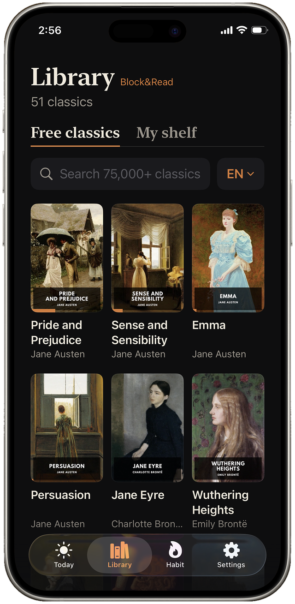

You already read for hours a day
Here's the uncomfortable arithmetic. The average phone user spends multiple hours a day on the screen, much of it literally reading — captions, threads, comments, news blurbs. At an ordinary reading pace, thirty minutes a day is roughly a book every two weeks — twenty-plus books a year. The gap between "I never read" and "I read 25 books this year" isn't time. It's routing.
The feed wins the routing war because it's always the path of least resistance: zero commitment, instant payoff, one tap away. Books lose because they ask for a decision — which book? where did I leave it? is it worth starting now? — and decisions are friction. To read more, you don't need more discipline. You need to reverse the friction gradient.
Four moves that reroute the hours
- Put the book where the scroll is. Good intentions live on nightstands; habits live on phones. The book has to open on the device your hand already reaches for — and ideally, it should open instead of the app you reached for.
- Kill the decision. One current book, always open at your exact page. Not a library to browse — a page to continue. Continuing is easy; starting is hard, so never make yourself start.
- Count pages, not hours. "Read for an hour" fails on busy days and then the habit unravels. "Read five pages" survives everything — and five pages routinely becomes thirty once you're in. The goal's only job is to get you past the first paragraph.
- Make the wins visible. Streaks, pages-per-week, books finished. The feed gives you a dopamine scoreboard; give the books one too, or they compete unarmed.
Nobody scrolls for three hours on purpose. Nobody reads thirty pages by accident — until the routing makes it automatic.
The magic is in the swap moment
Every reach for the phone is a fork: feed or page. If the page can capture even a third of those forks, you're reading more than you have since school. That's why the replacement mechanic beats every reading-tips listicle ever written: it doesn't ask you to find time, wake up earlier, or join a book club. It sits at the fork and hands you the better branch.
How Block&Read reroutes your hours
Block&Read is the fork-in-the-road, automated:
- Block your scroll apps — reach for one and your current book opens at your exact page. The decision is dead; you're already reading.
- Set a small daily page goal — hit it and your apps unlock. Read past it whenever the book wins (it will, more often than you think).
- Pick from the classics shelf free in English and Spanish, or import your own EPUBs (Premium).
- Watch the scoreboard: streak, pages this week, books finished — reading finally gets the stats treatment the feed always had.

Twenty books a year is hiding in your screen time.
Free to download · No ads, no accounts, no tracking
Get Block&Read